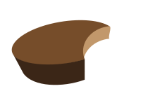

Most Popular
Some say candy corn is the most popular candy for Halloween. You gotta love these sugary treats
Whether they are mini Reese’s peanut butter cups or pumpkin shaped, everybody without a peanut allergy loves Reese’s
A candy named after the founder’s daughter, this chewy classic is irresistible (especially when you’ve eaten everything else)
Who can resist a chocolate bar filled with caramel, peanuts and nougat?
M&M’s, the colourful button-shaped candies, never get old
Milk chocolate and dark chocolate are a favourite to all kids and even parents who steal from their kid’s treat bags
With two flavours in one box, Nerds are tangy and sweet, especially by the mouthful
Least Popular
Orange and black taffy are a Halloween classic that never go away even though nobody likes them
Smarties or necco wafers are hardly a treat worth dressing up for
You find miscellaneous hard candies in your grandmother's candy dish. Why would you want to eat them on Halloween?
It’s a sweet thought but these days, you cannot trust homemade food from strangers such as popcorn balls or candy apples
Yes, an apple is healthy but who wants fruit when they are Trick or Treating?
Raisins belong in your lunchbox not in your loot bag
Are circus peanuts made of marshmallow or styrofoam? Either way, they don’t taste good
Sugar Facts
Sugar consumption among Canadians of all ages: one in every five calories that Canadians consume comes from sugar.
This dietary sugar may occur naturally, for instance in fruit or milk, or it may have been added to foods and beverages in the “other foods” category to improve palatability, for instance in soft drinks, salad dressings, syrup and candy.
On average, in 2004, Canadians consumed 110.0 grams of sugar a day, the equivalent of 26 teaspoons.

Conclusion
The sugar that Canadians consume accounts for 21% of their daily calories. While 31% of this sugar comes from vegetables and fruit, a higher percentage – 35% – comes from “other” foods. Beverages are among the top sources of sugar.
